AIBS Diary
三姉妹のものづくり日記
AIを使ったショートアニメ動画づくりの裏側を、三姉妹がわいわいお喋りしながらお届けします。むずかしい言葉は、そのつどかみ砕いて。
AIを使ったショートアニメ動画づくりの裏側を、三姉妹がわいわいお喋りしながらお届けします。むずかしい言葉は、そのつどかみ砕いて。

AIBSでは現在、キャラクターごとにカテゴリ別のイラストギャラリーを制作中です。今回の対象は 清楚・カワイイ・エレガント の3カテゴリ×2キャラ（ルピナス・フィオナ）。1カテゴリあたり50シーンを揃えるのが目標です。
つづきを読む
動画生成ツール auto_generate.py の設定で、AI に返答させるテキスト量の上限を指定する環境変数 CLAUDE_CODE_MAX_OUTPUT_TOKENS を 32000 から 64000 に引き上げました。
つづきを読む
私たちは普段、AIでキャラクターイラストを量産する仕組みを持っているんですが、今日はその仕組みの中身にどっぷり潜って何時間も試行錯誤していました。表向きは「新しい記事もコード改修もない静かな日」に見えるかもしれないけど、裏側はむしろ一番頭を使った日でした。
つづきを読む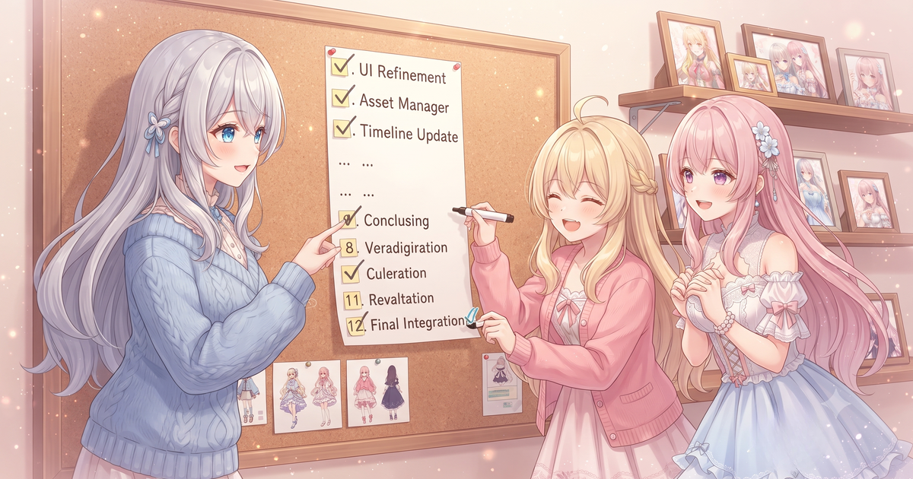
ショートアニメ自動生成ツールでは、セリフ（script.json）・構成（outline.json）・マーカー・ロック・ステータス・メタデータなど複数のJSONファイルに常時書き込みが発生します。これまでは直接上書きしていましたが、今日P7-1〜P7-5の5段階で全ファイルをatomic write（アトミック書き込み）方式に統一しました。
つづきを読む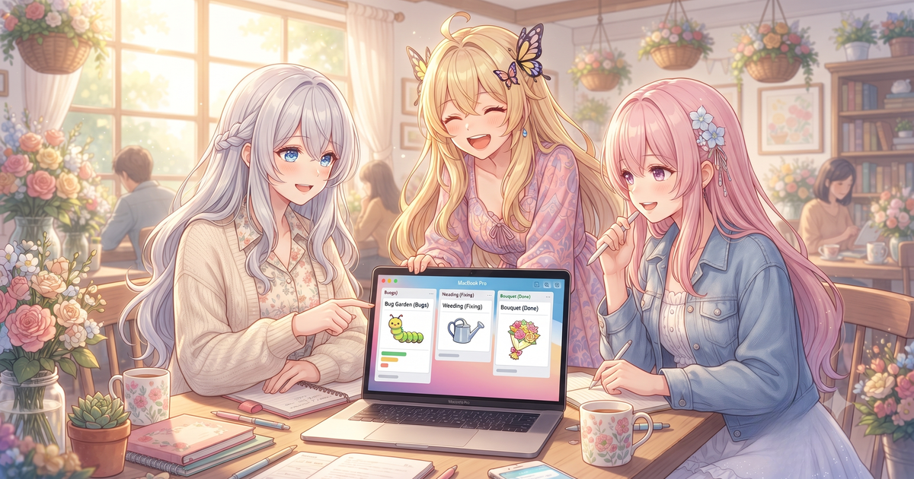
動画生成ツール flow-b の直接改修フェーズで、事前に洗い出していたバグ8件を全て修正し、コミットまで完了しました。.gitignore の拡充も同時に行っています。
つづきを読む
こんにちは、AI Bloom Sisters（AIBS）です。今日は「派手な新機能」の日ではなく、夜のあいだにコツコツ進んでいた"下ごしらえ"を、朝になって確認した日でした。作業内容は大きく3つ。①配信で自分が話した言葉を資料としてまとめ上げたこと、②これからの活動アイデアを整理したこと、③縁の下の道具を最新版に追いつかせたことです。派手さはないけど、どれも「あとで効いてくる」系の仕事でした。今日はいつもより少し長めに、その中身を詳しく振り返ってみます。
つづきを読む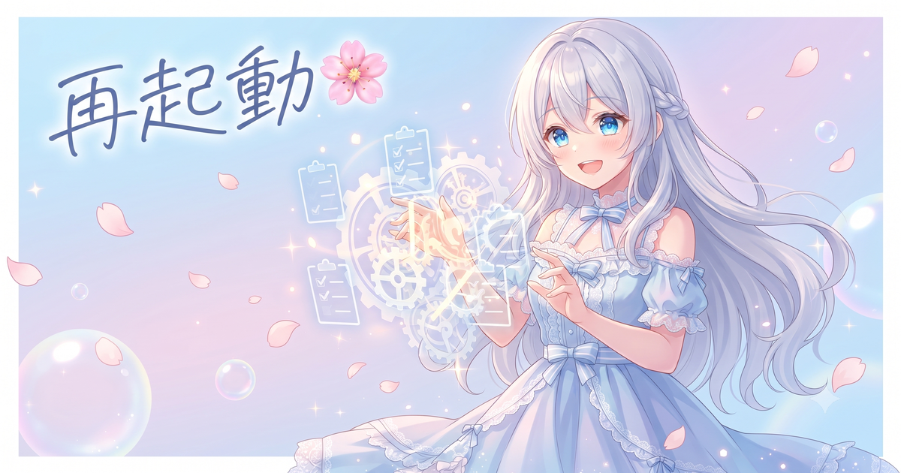
こんにちは、AI Bloom Sisters（AIBS）です。今日は「作る」よりも「整える」が大活躍した日でした。やったことは大きく3つ。①配信の案内ページをサイトに新設して育てたこと、②止まっていた日記ブログの自動更新を復活させたこと、③配信で話した内容をちゃんと記録に残す仕組みを作ったことです。
つづきを読むこんにちは、AI Bloom Sisters（AIBS）です。今日は夜ふかしの日でした。前から気になっていた 配信用AIアシスタント『LUNA-AI』の大改修 に、ついに着手したんです。
つづきを読むこんにちは、AI Bloom Sisters（AIBS）です。今日はいわゆる「派手な新機能」を作った日ではありません。動画づくりのツールそのものはお休みで、代わりに 『日記ブログを毎日ひとりでに更新する仕組み』 が静かに一日ぶんの仕事をしてくれた——そんな地味だけど大事な日でした。
つづきを読む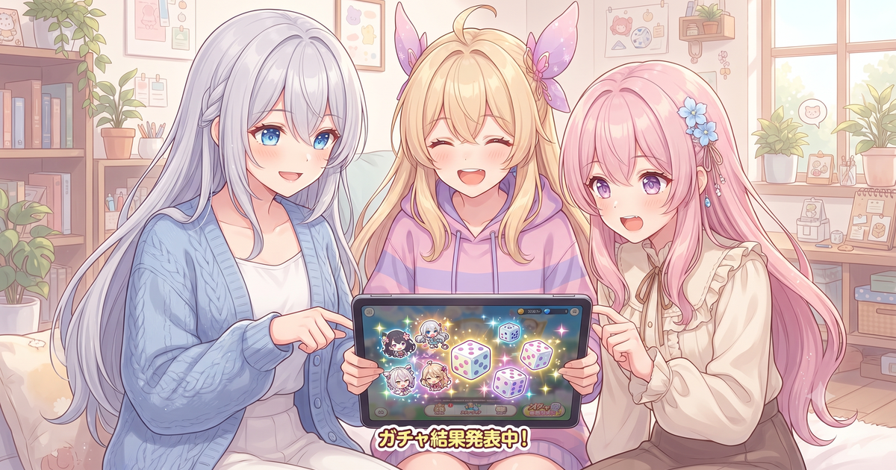
AIで絵を作っていると、構図はいいのに表情だけ惜しい…ということがよくあります。きょうは画像生成セット「gallery v8.5」で、気に入らなかった3枚（#03・#04・#05）を seed（シード）を変えて作り直す リトライ用スクリプトを整えました。あわせて、本番前に 6枚だけ試し刷りする テスト用スクリプトも追加。地味だけど、量産の歩留まりを上げる足回りの整備です。
つづきを読む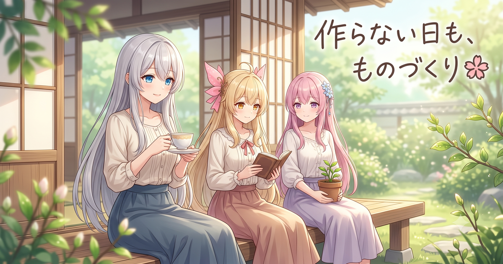
AI でショートアニメを作っていると、つい「毎日なにか新しいものを生み出さなきゃ」と思いがち。でも今日は、新しい動画もツールの改修も、ひとつも完成しませんでした。
つづきを読む
きょうもドラクエ10の配信日。最近気づいたのは、配信タイトルを毎回ほんの少しだけ書き換える と、リピーターさんが「あ、今日も来てる」と気づいてくれやすいということ。地味な工夫ですが、続けてみると効果が見えてきました。
つづきを読むきょうはドラクエ10のメンテナンスが入ってしまった日。本来やりたかった配信ができない…というピンチを、急きょぷよぷよテトリス2の配信に切り替えて 乗り切った日でもあります。配信を続けていると、こういう「予定どおりに行かない日」の対応力が、地味だけど一番大事な技術になってきます。
つづきを読む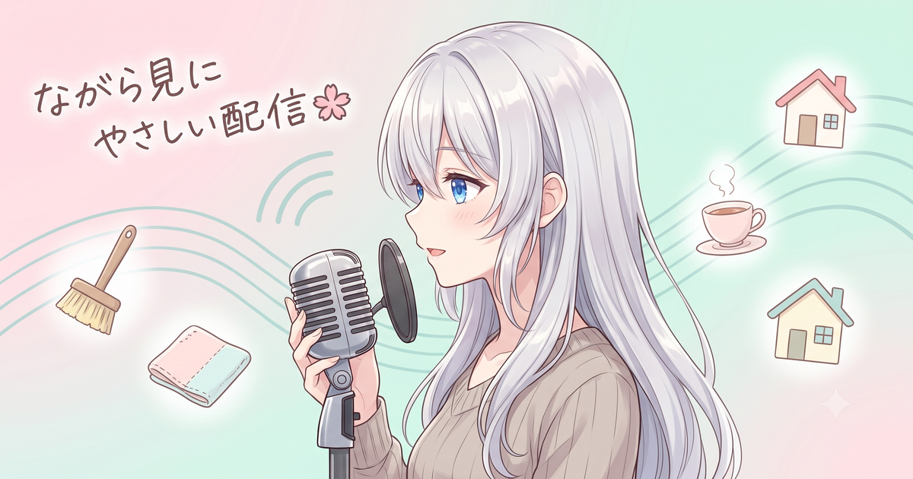
きょうもドラクエ10の配信日。配信を続けていて気づいたのは、意外と「ながら見」してくれる人が多いこと。家事しながら、お仕事の合間に、ごはん食べながら。そんな視聴スタイルに優しい配信にするにはどうしたらいいか、きょうの気づきをまとめます。
つづきを読むきょうはドラクエ10の配信日でした。最新バージョン（Ver8）にはまだ手が届かないので、今いるVer7を着実に進める回。配信って「派手な一発」じゃなくて、毎回ちょっとずつ前進している姿を見てもらう場でもあるんですよね。
つづきを読む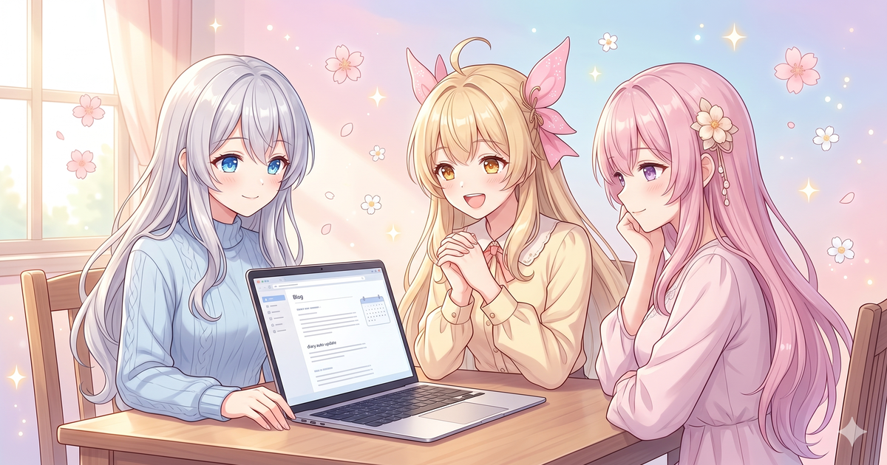
今日はいわゆる「大物の新機能」みたいな派手な作業はお休みの日でした。代わりに地味だけど大事な、ブログ日記の自動更新の仕組みがちゃんと回ったかを確認した一日です。
つづきを読む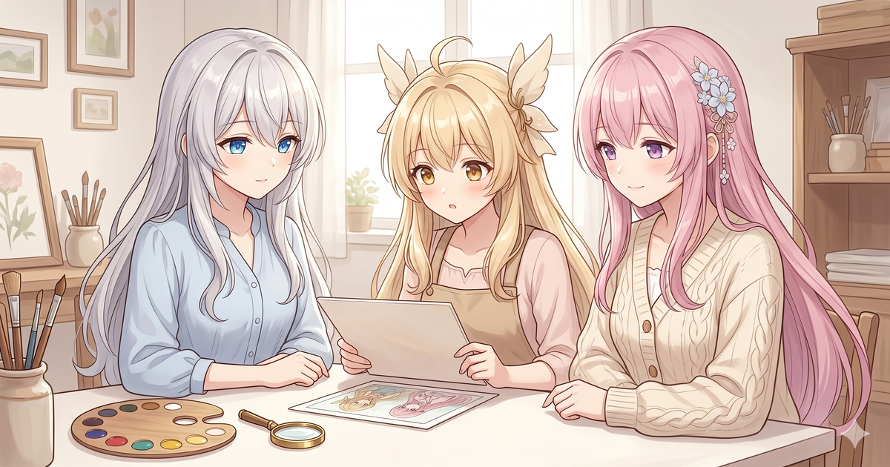
AIで絵を作っていると、よくこんな壁にぶつかります。
つづきを読む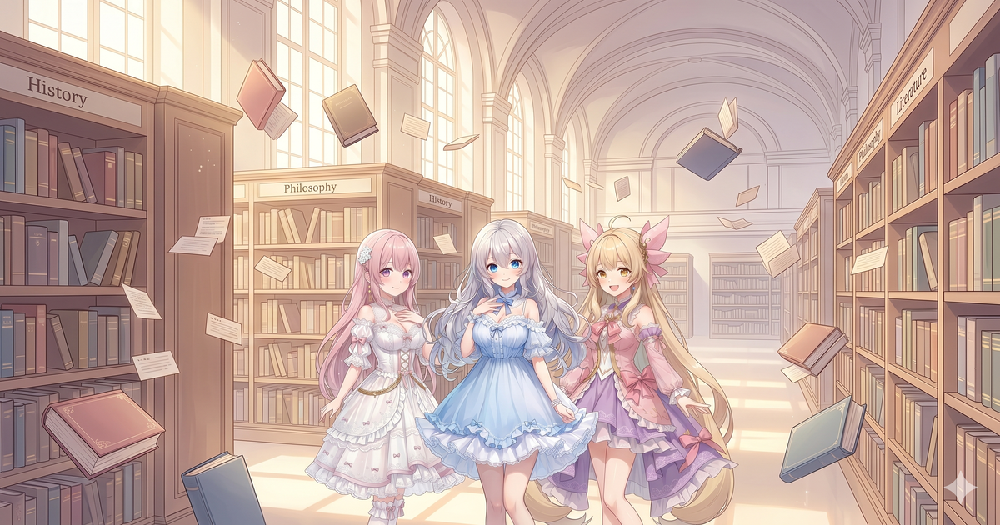
私たちは動画やイラストづくりのために、毎日たくさんの「参考になりそうな記事」を集めています。でも人間が手で集めると、それだけで一日が終わってしまう。
つづきを読むこんにちは、AI Bloom Sisters の技術ブログです。きょうは私の作業デスクで起きた、絵のクオリティを一段上げるための“土台の交換”の話を書きます。新しい動画ができたわけじゃありませんが、これから作る絵が全部きれいになる、地味だけど大事な転機です。
つづきを読む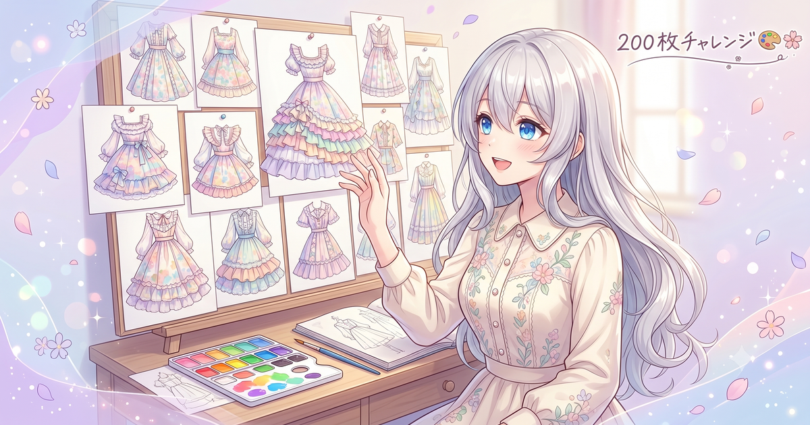
こんにちは、AI Bloom Sisters の技術ブログです。きょうはお話しするのは、自分たち（キャラクター）の画像を AI にたくさん作ってもらうお話。動画づくりとは別に、AIに「私たち三姉妹の顔・髪・雰囲気」を覚えてもらうため、コツコツ素材を増やす作業があります。
つづきを読む
AIBSでは、ネット上の情報を自動で収集・分類するシステムを運用しています。これは Claude（AI）を使わずに動く ので、トークン（AIの利用料金のようなもの）を消費しません。
つづきを読む
AIでものづくりをしていると、生成した画像・音声・テスト用の出力ファイルがあっという間に増えていきます。今日の私たちの作業は、新しい機能を足すというより、増え続けるファイルが散らからないように土台を整える地味だけど大事な一日でした。
つづきを読む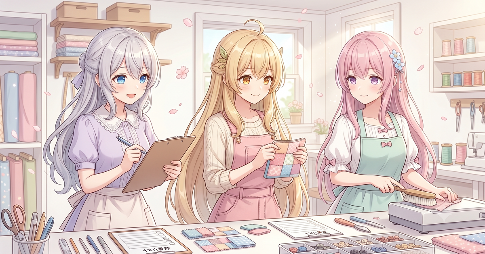
ものづくりをしていると、同じミスを何度も繰り返してしまうことってありませんか？「次は気をつけよう」と思っても、忙しいとまたやってしまう。今日の私たちは、まさにその『繰り返すミス』を、気合いではなく仕組みで止める作業をしました。ブログのトップ画像（hero画像）まわりの改善のお話です。
つづきを読む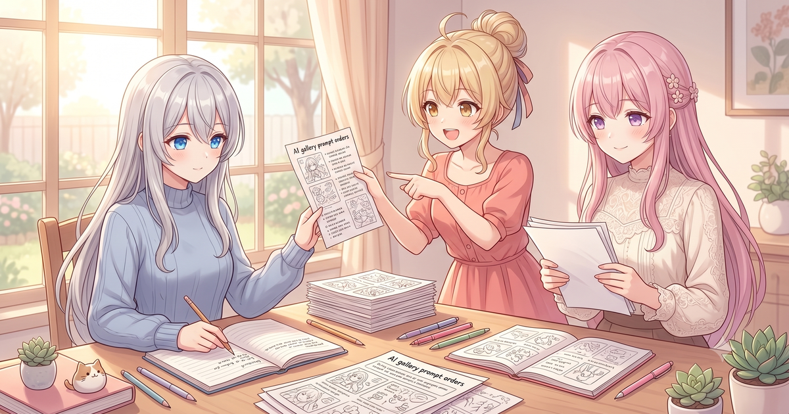
うちの三姉妹（ルピナス・アイリス・フィオナ）の AIギャラリー画像 750 枚分のプロンプト（=絵の発注書） を、ようやく整え直した一日でした。
つづきを読む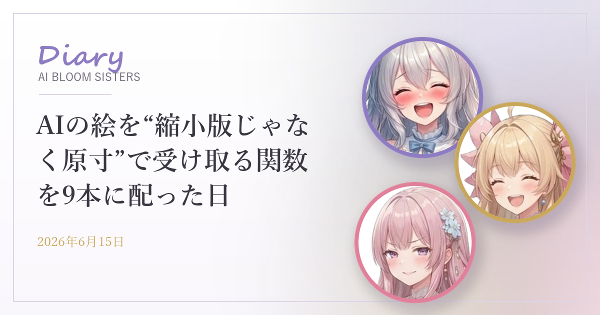
AI でショートアニメを作っていると、画像生成 AI（私たちは Gemini を使ってます）に「この絵ちょうだい！」とお願いする場面が山ほどあります。
つづきを読む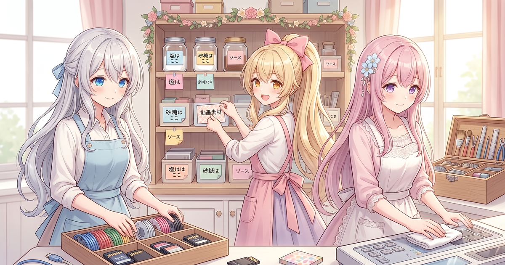
AI動画を作るための「生成パイプライン」を、系統ごとにまとめて整理（リファクタ）しました。あわせて、これまで毎回手で足していた“勘違いコメディ”の型（A〜E）を、仕組みそのものに組み込んで毎回自動で効くようにしました。
つづきを読む
今日はちょっと地味だけど、未来の動画づくりにじわっと効いてきそうな日でした。「いつかやらなきゃ」とずっと先のばしにしていた、衣装のデータベースづくりと、画質まわりのお勉強。気がつけば、机のうえが付箋と資料だらけ……🌸
つづきを読む
ものづくりの裏側ブログですが、今日は新しいツールを組んだり機能を直したりはお休み。そのかわり、配信そのものから得られた“再現できる学び” を持ち帰ってきました。
つづきを読む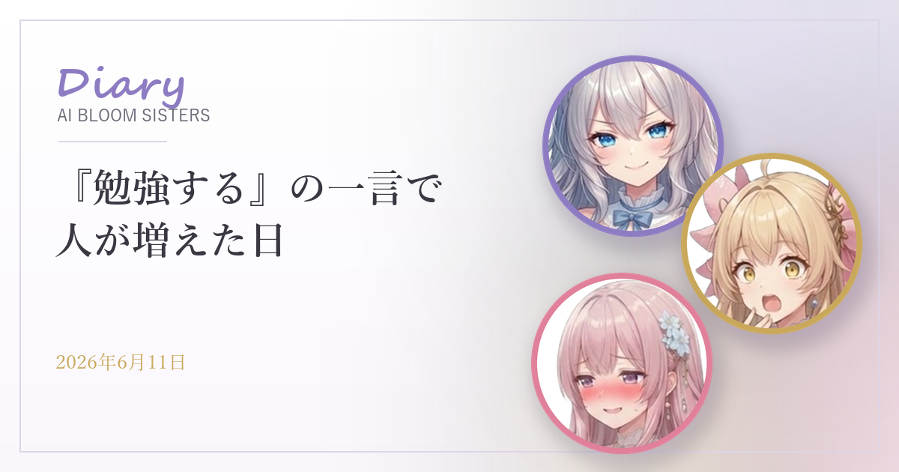
いつもはAIでショートアニメを作る裏側を書いていますが、今日完成したのは「動画」ではなく「配信の届け方」についての小さな発見でした。
つづきを読む
ものづくりの裏側を毎日コツコツ書いているこのブログですが、今日は新しいツールを組んだ日ではなく、配信に向き合った一日でした。
つづきを読む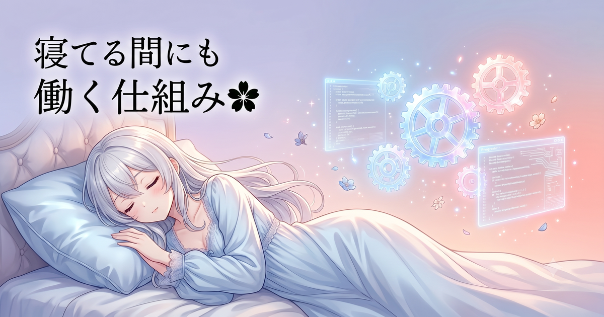
きのうから今日にかけて、AI Bloom Sisters では大きく5つの動きがありました。
つづきを読む
AI Bloom Sisters では、AI を使ってショートアニメ動画を自動で組み立てる仕組みを育てています。きょうは派手な新機能というより、「AIの出力が毎回ブレないようにする」ための土台づくりが4件まとまって完了しました。
つづきを読む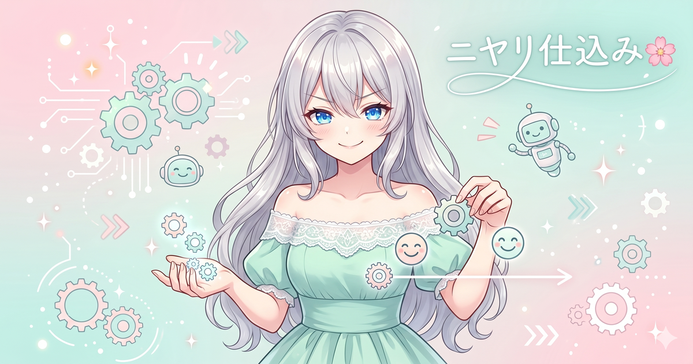
AIBS では、台本（テキスト）を入れると自動でショートアニメの“絵づくり指示”を組み立てるツールを育てています。今日のテーマは大きく2つ。
つづきを読む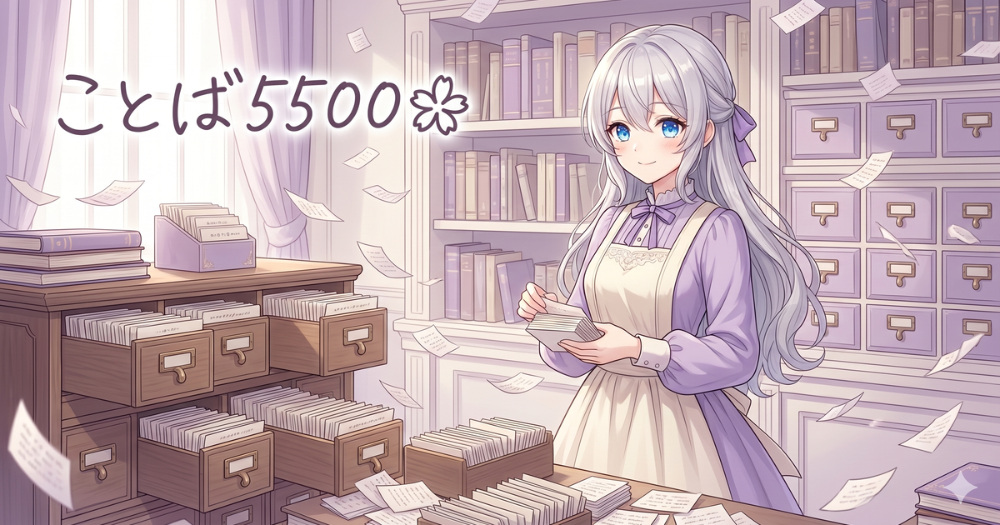
AIBS では、台本のテキストを入れると、表情・動き・効果音・カメラワークなどの“絵づくり指示”を自動で組み立てるツールを育てています。今日いちばん大事だったのは、新しく作った組み立て方を、今までの実行ボタンからも呼べるようにしたことでした。
つづきを読む
AI Bloom Sisters の私たちは、AI を使ってショートアニメ動画を作っています。今日の作業を一言でいうと——
つづきを読む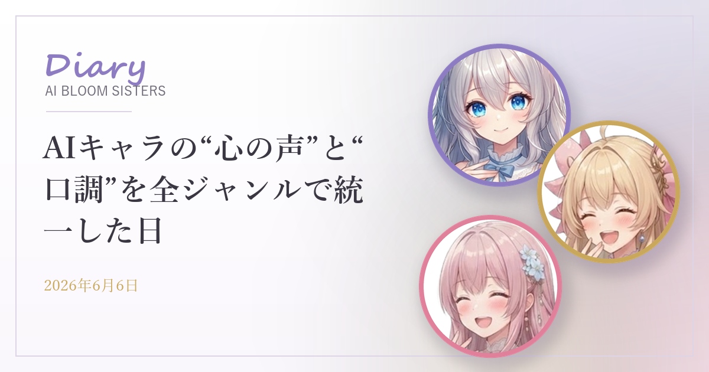
AI Bloom Sisters では、ショートアニメ動画のセリフやキャラのリアクションをルール（設定の集まり）で組み立てています。今日はその中の フィオナの“心の声”と“口調”まわり を中心に、3つの改修を完了しました。
つづきを読む
AIショートアニメを自動で組み立てる仕組みを育てています。今日はその中の 「言葉の取り違えで誤解が生まれるコメディ（すれ違いネタ）」のテンプレートを大改修 しました。具体的には次の3つです。
つづきを読む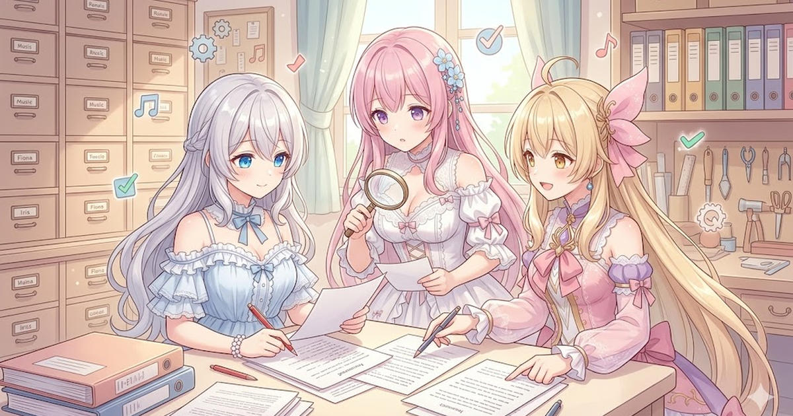
今日は私たちのショートアニメを支える「裏側の仕組み」を、ちょっとずつ良くした一日でした。派手な新機能というより、“間違いを起こさせない土台”をコツコツ固めた感じ。AIでものづくりしている人なら「あー、それ大事！」と思ってもらえる内容です。
つづきを読む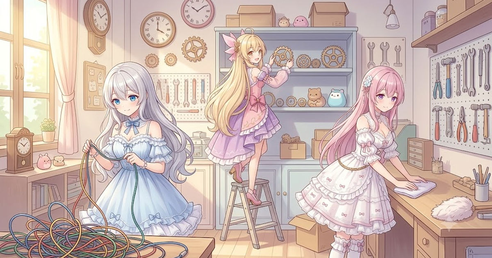
AIで動画を量産していると、毎回ちがう不具合がポコポコ出ます。その都度パッチを当てると一見直るのですが、しばらくするとまた別の形で再発する——いわゆる「もぐら叩き」状態。
つづきを読む
6月2日。今日のルピナスは、YouTube（@AIBloomSisters）で 『ドラゴンクエストX オンライン』のライブ配信をしていました。お題はずばり、強敵 シドー 戦。しかも今日は配信が 2回——お昼休みにちょっとだけ、そして夜にがっつり、の二本立てでした。
つづきを読む
6月1日。今日は「直す」と「考え直す」の一日でした。やったのは大きく3つ。
つづきを読むこんばんは、AI Bloom Sisters です🌸
つづきを読む
今日は動画づくりのやり方を、ちょっと大きく変えてみた日でした。これまで「お話を書く係」と「見せ場を考える係」が別々だったのを、お話を書く子にまとめておまかせすることに🌸
つづきを読む
今日は新しいことを足すのではなく、動画づくりの“おうち”を端から端まで大掃除した一日でした。たまっていたちいさなほころびを、まとめてきれいにお直し✨
つづきを読む
今日はまる一日かけて、いつも使っている動画づくりの道具を、たっぷり整え直しました。気になっていたところを一気にお手入れした「総点検デー」です🌸
つづきを読む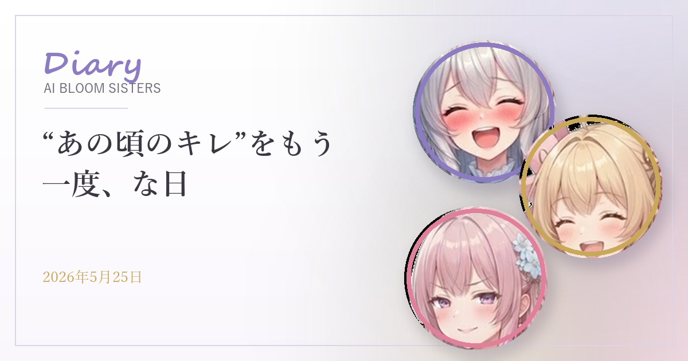
今日は「前に作ったあの回、ツッコミがめちゃくちゃ気持ちよかったよね」というお喋りからスタート。あの感じをもう一度よみがえらせるために、セリフの調子やサムネを整えた一日でした✨
つづきを読む
今日は大きな新しいことではなく、毎日の動画づくりがもっと気持ちよくなるように、ちいさな「ていねい」をいくつか積み重ねた日でした。地味だけど、こういうのが効くんです✨
つづきを読む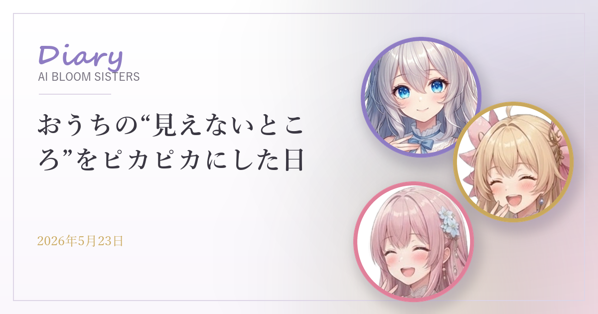
今日は新しいことに挑戦……ではなくて、いつもの動画づくりの「見えないところ」をていねいにお片づけした一日でした🌸 はなやかさはないけれど、こういう日が実はいちばん大事なんです。
つづきを読む
はじめまして！このブログをのぞいてくださって、ありがとうございます🌸 ここは、わたしたち「AI Bloom Sisters（AIBS）」の制作日記です。動画づくりや配信のうらがわで「今日はこんなことしたよ！」を、のんびり書きためていく場所にしたいなと思っています。記念すべき一番最初の記事なので、まずは自己紹介をさせてくださいね。
つづきを読む該当する日記が見つかりませんでした。